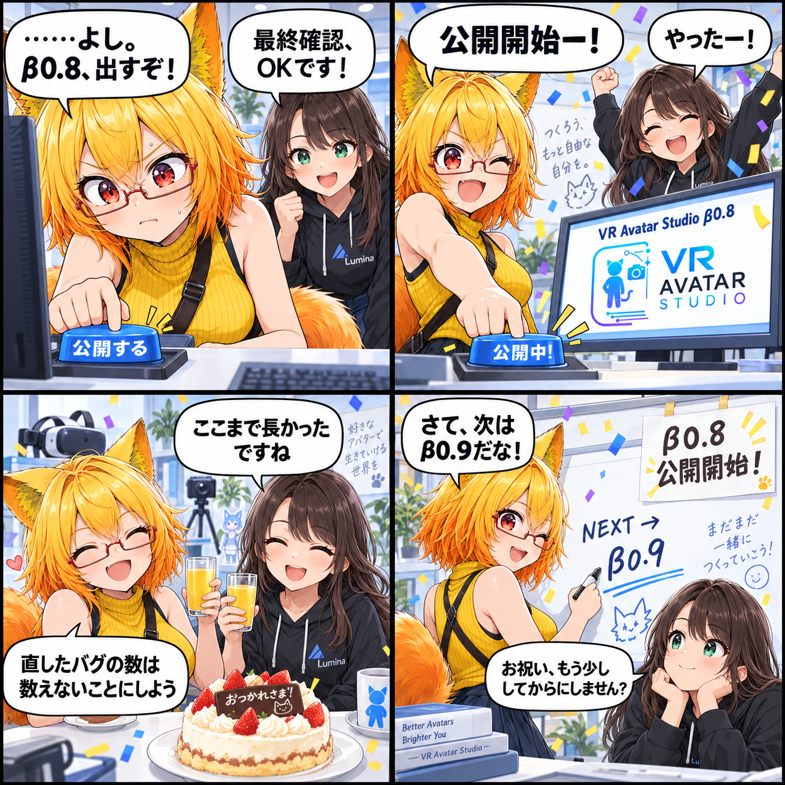

【特別版】VR Avatar Studio β0.8、公開開始！
VR Avatar Studio β0.8 の公開を開始しました！ β0.7から少しずつ積み上げてきたものが、ようやくひとつの区切りを迎えました。

β0.8、公開開始です！
β0.7からここまで、作って、動かして、壊れて、直して、また試して。ひとつ直したら別の場所が気になり、良くなったら次の使い方が見えてくる。そんな繰り返しを続けてきました。
今日は細かな変更点を延々と並べる日ではなく、まずは「β0.8として外へ出せた」ことを祝う日にします。
作って、壊して、直して、また試して。VRAS β0.8、ついに公開開始です！
β0.8で、VRASはまた少しStudioらしく
今回のβ0.8は、ひとつの目玉機能だけを追加したVersionではありません。アバターを扱って、背景を整えて、動かして、撮って、VRでも楽しむ。その一連の体験を少しずつ広げ、つなぎ直してきたVersionです。
- Desktop / VRのアバター編集・撮影・操作を強化
- 背景、Studio State、空・雲・霧・天候・水面などの環境表現を拡張
- VAB / VBG / VAC / VCI周辺の読込・保存・安定性を改善
- アニメーション、歩行、ポーズ、VRアバター化を改善
- 撮影エフェクト、濡れ、水滴、ステッカーなどの表現を拡張
- AI画像ポーズなど、制作を助ける機能を改善
- UIの導線、設定、一覧、戻る操作などを継続的に整理
- アプリVersion、Build情報、CHANGELOGの正式な管理を導入
これらは今日一日で突然できたものではありません。β0.7以降に積み上げてきた変更を、今回β0.8という形でまとめて届けます。
ちょっとだけ、お祝い
4コマでは、公開ボタンを押した瞬間から紙吹雪。ケーキとジュースでひと息ついたところで、すぐに「次はβ0.9だな！」と言い出すろひを描きました。
直したバグの数は……今日は数えないことにします。
そして、次はβ0.9へ
もちろん、β0.8で完成ではありません。次の目標はβ0.9です。
β0.9では、UIの視認性、操作動線、処理速度をさらに磨きつつ、残っている不具合を徹底的に潰していきます。新しい機能を増やすだけでなく、いまある機能を「迷わず、待たず、安心して使える」状態へ近づけていく予定です。
まとめ
試行錯誤を重ねてきたVRASが、またひとつ新しいVersionになりました。β0.8を触ってくれる方、感想や不具合を伝えてくれる方、開発を見守ってくれる方へ。いつもありがとうございます。
まずは少しだけお祝いして、それからまた次へ。VR Avatar Studio β0.8、公開開始です！